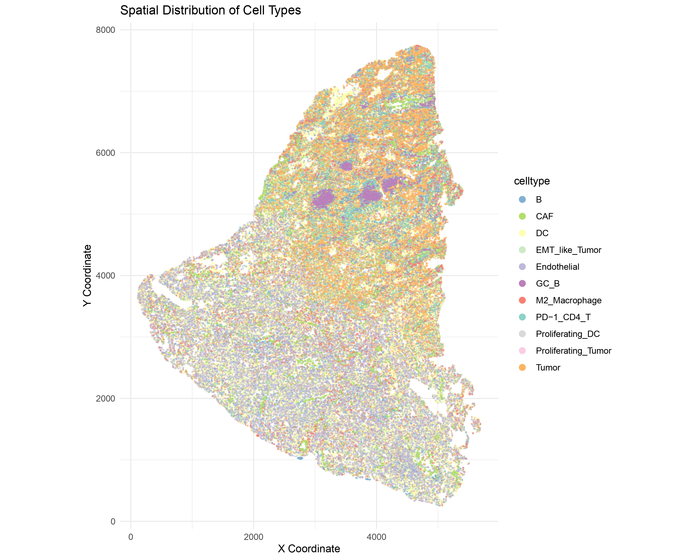
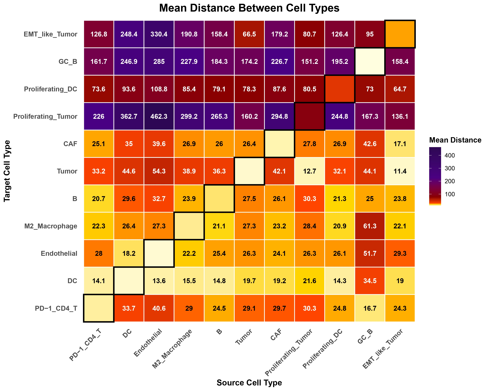
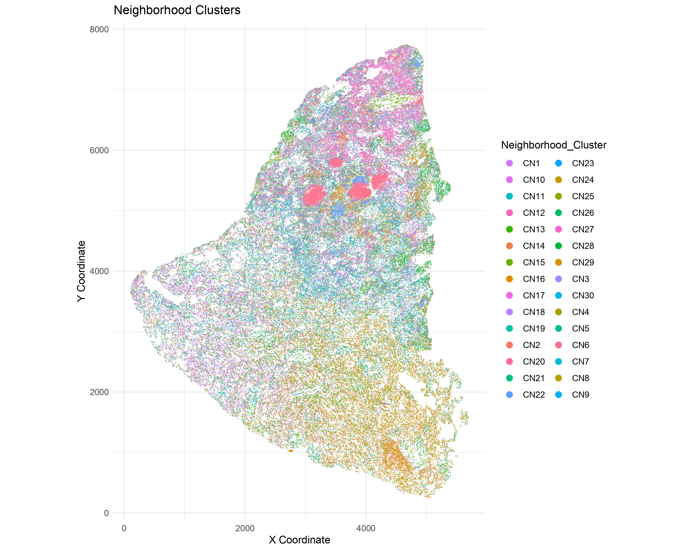
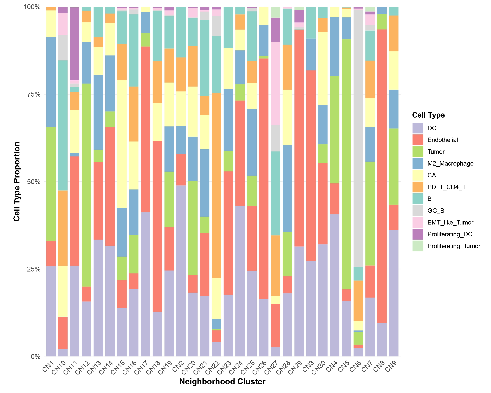
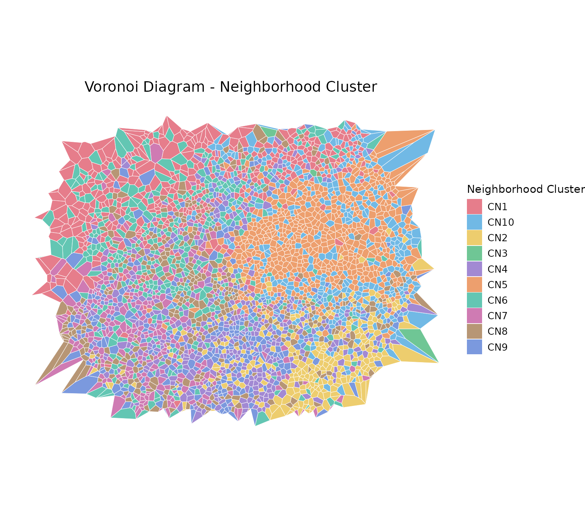
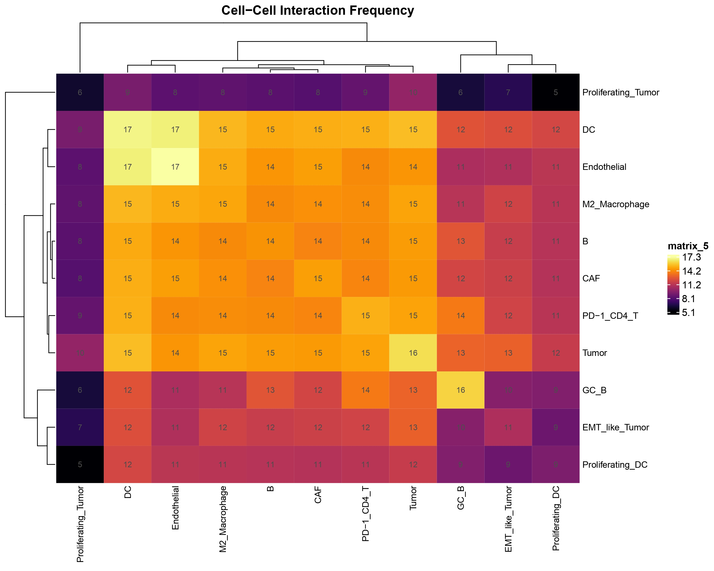
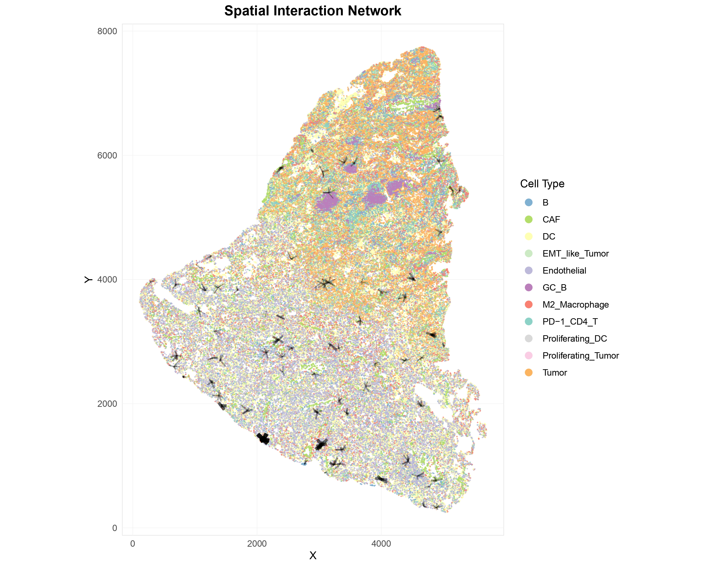
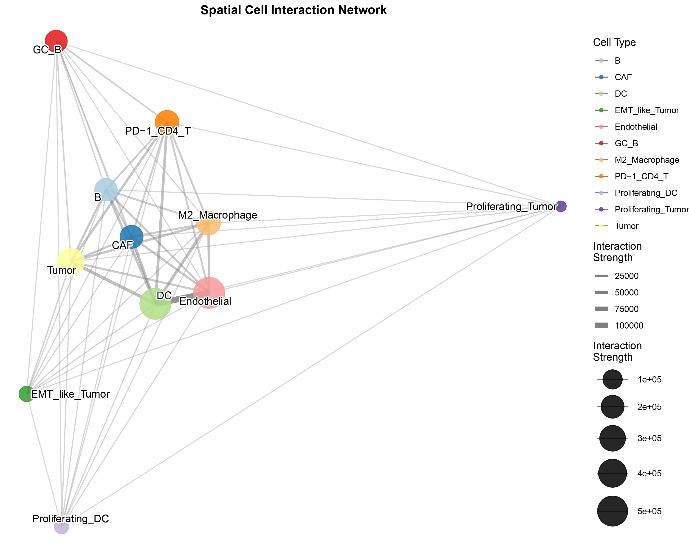
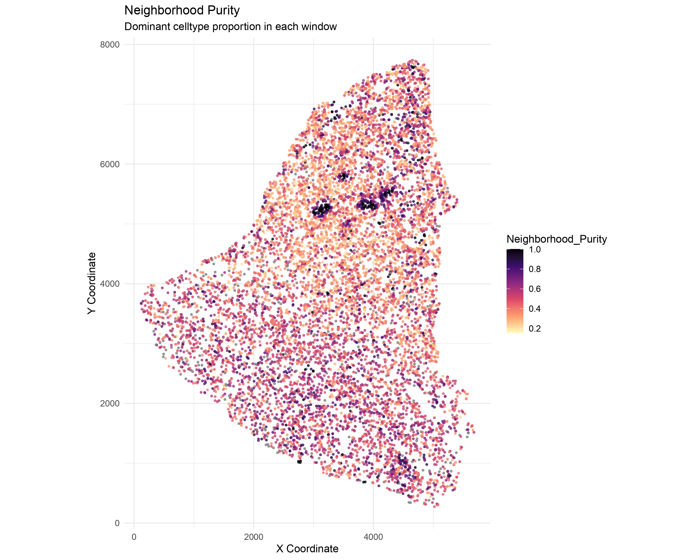

This tutorial demonstrates the complete workflow for spatial network analysis using Sphinx package.
1.Data Preparation
# Load spatial metadata
df <- fread("tsu35_metadata.csv")
# Prepare data for spatial analysis
df <- prepare_data(df,
cell_id_col = "V1",
celltype_col = "celltype")Spatial Distribution of Cell Types
visualize_spatial_distribution(
df,
x_col = "X",
y_col = "Y",
celltype_col = "celltype",
point_size = 0.7,
title = "Spatial Distribution of Cell Types"
)
Visualize spatial cell type distribution
2.Spatial Distance Analysis
# Calculate optimal radius for neighborhood definition
dist_info <- calculate_optimal_radius(df)
message("Recommended radius: ", round(dist_info$recommended_radius, 2))
# Calculate distances between cell types
dist_result <- calculate_celltype_distances(df, celltype_col = "celltype")
visualize_distance_heatmap(dist_result)
visualize_distance_parallel(dist_result)3.Spatial Network Construction
# Build spatial network using automatic method selection
spatial_edges <- build_spatial_network(
df,
method = "auto",
celltype_col = "celltype"
)4.Neighborhood Feature Calculation
# Calculate neighborhood composition features
feature_df <- calculate_neighborhood_features(
df,
spatial_edges,
celltype_col = "celltype"
)5.Neighborhood Clustering
# Cluster neighborhoods based on spatial features
clustered_df <- cluster_neighborhoods(
feature_df = feature_df,
spatial_edges = spatial_edges,
method = "kmeans",
k = 12
)
message("Identified ", length(unique(clustered_df$Neighborhood_Cluster)), " neighborhood clusters")Neighborhood Clusters
visualize_spatial_distribution(
clustered_df,
x_col = "X",
y_col = "Y",
celltype_col = "Neighborhood_Cluster",
point_size = 1.5,
point_alpha = 0.6,
title = "Neighborhood Clusters"
)
Cluster Composition
# Calculate cluster composition
comp_df <- calculate_cluster_composition(
clustered_df,
cluster_col = "Neighborhood_Cluster",
celltype_col = "celltype"
)
# Plot composition bar plot
plot_composition_barplot(
comp_df,
cluster_col = "Neighborhood_Cluster",
celltype_col = "celltype",
value_col = "proportion"
)
Voronoi Diagram
visualize_voronoi(
clustered_df,
coloring = "neighborhood",
celltype_col = "celltype",
neighborhood_col = "Neighborhood_Cluster"
)
6.Spatial Interaction Analysis
# Analyze cell-cell spatial interactions
interaction_results <- analyze_spatial_interactions(
clustered_df,
spatial_edges,
celltype_col = "celltype"
)Cell-Cell Interactions
visualize_interaction_heatmap(
interaction_results$interaction_matrix,
transform = TRUE
)
Spatial Network Visualization
visualize_spatial_network(
clustered_df,
spatial_edges,
celltype_col = "celltype",
x_col = "X",
y_col = "Y",
edge_mode = "top",
top_n = 5,
point_size = 0.01,
point_alpha = 0.7,
edge_size_range = c(0.3, 2),
edge_alpha_range = c(0.3, 0.9),
edge_color = "black"
)
Interaction Network Graph
visualize_interaction_network(
interaction_results$network,
node_size_range = c(5, 15),
edge_size_range = c(0.5, 3),
label_size = 4,
show_labels = TRUE,
max_nodes = 50
)
7.Neighborhood Purity Analysis
# Calculate neighborhood purity using radius method
neighborhood_purity <- calculate_neighborhood_purity(
clustered_df,
x_col = "X",
y_col = "Y",
celltype_col = "celltype",
method = "radius",
radius = 16.8,
min_cells = 5,
verbose = TRUE
)Neighborhood Purity Graph
visualize_neighborhood_purity(
neighborhood_purity,
x_col = "X",
y_col = "Y",
celltype_col = "celltype",
# max_points = 1000,
point_size = 1.0,
point_alpha = 0.8,
title = "Neighborhood Purity"
)